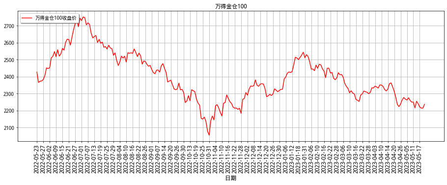

数据时间：2023-07-25 11:25:43
1
国别资金流
国家之间的资金流动，蕴含着市场对经济和政策的预期。
美元人民币
汇率是两种货币之间兑换的比率，亦可视为一个国家的货币对另一种货币的价格。
汇率的价格是一个结果，其变化意味着资金的流动方向。
人民币相对美元贬值：美元人民币上涨，市场在卖出人民币买入美元；
人民币相对美元升值：美元人民币下跌，市场在卖出美元买入人民币。
| 日期 | 美元兑人民币汇率 | 汇率变化（bp） |
| | |
| 2023-07-25 | 7.1542 | -317 |
| 2023-07-24 | 7.1860 | -22 |
| 2023-07-21 | 7.1882 | 106 |
| 2023-07-20 | 7.1775 | -503 |
| 2023-07-19 | 7.2279 | 431 |
| 2023-07-18 | 7.1847 | 121 |
| 2023-07-17 | 7.1726 | 326 |
| 2023-07-14 | 7.1400 | -75 |
| 2023-07-13 | 7.1475 | -160 |
| 2023-07-12 | 7.1635 | -449 |
中美利率差
利率决定着资金的机会成本。一个国家的利率高，意味着这个国家的资金未来的收益高，对资金的吸引力大。
可以通过两国的利率差，来衡量两国的资金吸引力。
中美利率差高，中国对资金吸引力大；
中美利率差低，中国对资金吸引力小。

中美利率差
| 日期 | 银行间质押式回购加权利率：7天 | 美国联邦基金有效利率 | 两国利率差 |
| | | |
| 2023-07-21 | 1.8116 | 5.08 | -3.2684 |
| 2023-07-20 | 1.8201 | 5.08 | -3.2599 |
| 2023-07-19 | 1.8496 | 5.08 | -3.2304 |
| 2023-07-18 | 1.8912 | 5.08 | -3.1888 |
| 2023-07-17 | 1.8529 | 5.08 | -3.2271 |
| 2023-07-14 | 1.8154 | 5.08 | -3.2646 |
| 2023-07-13 | 1.7851 | 5.08 | -3.2949 |
| 2023-07-12 | 1.7526 | 5.08 | -3.3274 |
| 2023-07-11 | 1.7270 | 5.08 | -3.3530 |
| 2023-07-10 | 1.6978 | 5.07 | -3.3722 |
北向资金
北向资金指的是沪港通和深港通买入资金之和，是通过香港交易所买入内地的股票的资金。
体现了外资对中国资产的追逐情况：
北向资金为正，意味着外资买入内地股票；
北向资金为正，意味着外资买入内地股票；
| 日期 | 北向资金净流入 |
| |
| 2023-07-25 | 161.988610 |
| 2023-07-24 | -28.969409 |
| 2023-07-21 | 87.301650 |
| 2023-07-20 | 24.313395 |
| 2023-07-19 | -25.457394 |
| 2023-07-18 | -63.041064 |
| 2023-07-17 | 0.000000 |
| 2023-07-14 | 53.827849 |
| 2023-07-13 | 162.850825 |
| 2023-07-12 | 29.876620 |
其他预期
汇率的变化由两部分构成：
1.资金利率之差
2.其他预期因素：经济景气度、政策宽紧情况
一般来说，资金利率之差足以体现国别之间资金的吸引力情况，但如果资金的流向与吸引力相反，那意味着其他预期因素占据更大的比重。
中美利差高 + 人民币贬值（汇率升），可能体现了如下预期：
1.中国经济向差
2.中国货币政策偏宽松
3.美国经济向好
4.美国货币政策偏收紧
中美利差低 + 人民币升值（汇率跌），可能体现了如下预期：
1.中国经济向好
2.中国货币政策偏收紧
3.美国经济向差
4.美国货币政策偏宽松
2
流动性偏好
流动性偏好是指人们宁愿以牺牲利息收入为代价，来持有不生息的货币以保持财富的心理倾向。
2.1
美元
美元指数
美元指数是综合反映美元在国际外汇市场的汇率情况的指标，用来衡量美元对一揽子货币的汇率变化程度。
可以用来衡量市场对美元的流动性偏好：
美元指数上涨，美元流动性偏好变强；
美元指数下跌，美元流动性偏好变弱。
| 日期 | 美元指数 | 美元指数变化 |
| | |
| 2023-07-25 | 101.3815 | -0.0073 |
| 2023-07-24 | 101.3888 | 0.2948 |
| 2023-07-21 | 101.0940 | 0.2954 |
| 2023-07-20 | 100.7986 | 0.5177 |
| 2023-07-19 | 100.2809 | 0.3340 |
| 2023-07-18 | 99.9469 | 0.0499 |
| 2023-07-17 | 99.8970 | -0.0615 |
| 2023-07-14 | 99.9585 | 0.1968 |
| 2023-07-13 | 99.7617 | -0.8286 |
| 2023-07-12 | 100.5903 | -1.0763 |
任何以美元计价的资产都会受到美元流动性偏好变化所带来的冲击。
货币市场是跟外汇市场联系最紧密的，是最早反馈美元流动性偏好变化的力量。货币市场的变化，也会传染到其他市场，最终各个市场的流动性偏好发生共振。
美日汇率
美元流动性偏好变强，资金卖出日元买入美元，日元相对贬值，美日汇率上涨；
美元流动性偏好变弱，资金卖出美元买入日元，日元相对升值，美日汇率下跌。
| 日期 | 美元日元 | 美元日元变化 |
| | |
| 2023-07-25 | 141.312 | -0.167 |
| 2023-07-24 | 141.479 | -0.291 |
| 2023-07-21 | 141.770 | 1.446 |
| 2023-07-20 | 140.324 | 0.578 |
| 2023-07-19 | 139.746 | 0.916 |
| 2023-07-18 | 138.830 | 0.148 |
| 2023-07-17 | 138.682 | -0.061 |
| 2023-07-14 | 138.743 | 0.695 |
| 2023-07-13 | 138.048 | -0.459 |
| 2023-07-12 | 138.507 | -1.848 |
美国十年国债收益率
美元流动性偏好变强，市场中美元欠缺，卖出国债换成美元，国债价格下跌收益率上升；
美元流动性偏好变弱，市场中美元增加，多余美元买入国债，国债价格上涨收益率下降。
| 日期 | 美国十年国债收益率 | 美国十年国债收益率变化（bp） |
| | |
| 2023-07-25 | 3.867 | 0 |
| 2023-07-24 | 3.876 | 3 |
| 2023-07-21 | 3.842 | 0 |
| 2023-07-20 | 3.838 | 6 |
| 2023-07-19 | 3.777 | -1 |
| 2023-07-18 | 3.789 | -2 |
| 2023-07-17 | 3.809 | -2 |
| 2023-07-14 | 3.836 | 6 |
| 2023-07-13 | 3.769 | -18 |
| 2023-07-12 | 3.956 | -2 |
纳斯达克100指数
美元流动性偏好变强，市场中美元欠缺，卖出美股换成美元，美股下跌；
美元流动性偏好变弱，市场中美元增加，多余美元买入美股，美股上涨；
| 日期 | 纳斯达克100指数 | 纳斯达克100指数变化 |
| | |
| 2023-07-24 | 15448.021 | 22.347 |
| 2023-07-21 | 15425.674 | -40.414 |
| 2023-07-20 | 15466.088 | -360.264 |
| 2023-07-19 | 15826.352 | -14.999 |
| 2023-07-18 | 15841.351 | 128.074 |
| 2023-07-17 | 15713.277 | 147.680 |
| 2023-07-14 | 15565.597 | -6.379 |
| 2023-07-13 | 15571.976 | 264.750 |
| 2023-07-12 | 15307.226 | 188.164 |
| 2023-07-11 | 15119.062 | 73.423 |
美元计价大宗商品
美元流动性偏好变强，市场中美元欠缺，卖出大宗商品换成美元，美元计价大宗商品下跌；
美元流动性偏好变弱，市场中美元增加，多余美元买入大宗商品，美元计价大宗商品上涨；
| 日期 | WTI原油 | WTI原油变化 |
| | |
| 2023-07-25 | 78.87 | -0.03 |
| 2023-07-24 | 78.90 | 2.09 |
| 2023-07-21 | 76.81 | 1.11 |
| 2023-07-20 | 75.70 | 0.34 |
| 2023-07-19 | 75.36 | -0.35 |
| 2023-07-18 | 75.71 | 1.59 |
| 2023-07-17 | 74.12 | -1.15 |
| 2023-07-14 | 75.27 | -1.94 |
| 2023-07-13 | 77.21 | 1.37 |
| 2023-07-12 | 75.84 | 1.03 |
2.2
人民币
十年国债收益率
影响流动性偏好的因素主要是两个：
1.经济景气度变化：同向
2.资金利率变化：同向
可以通过十年国债收益率间接去衡量两者的综合：
人民币流动性偏好变强，资金流出金融市场，国债价格下跌，十年国债收益率上行；
风险偏好变强，资金从安全资产流向风险资产，国债价格下跌，十年国债收益率上行；
人民币流动性偏好变弱，资金流入金融市场，国债价格上涨，十年国债收益率下行;
风险偏好变弱，资金从风险资产流向安全资产，国债价格上涨，十年国债收益率下行。
| 日期 | 中国十年国债收益率 | 中国十年国债收益率变化（bp） |
| | |
| 2023-07-25 | 2.684 | 2 |
| 2023-07-24 | 2.661 | 0 |
| 2023-07-21 | 2.659 | -1 |
| 2023-07-20 | 2.669 | -1 |
| 2023-07-19 | 2.681 | 0 |
| 2023-07-18 | 2.675 | -1 |
| 2023-07-17 | 2.688 | 0 |
| 2023-07-14 | 2.695 | 0 |
| 2023-07-13 | 2.691 | 0 |
| 2023-07-12 | 2.695 | 0 |
万得金仓100
通过基金持仓市值与基金持股只数两个指标，对上市A股进行综合评分，选取排名前100的公司入选指数，用以反映被广泛基金看好的公司的整体走势。
因为公募基金是委托资金，并且基于相对收益考核，其资金是风险偏好最高的资金。万得金仓100是用公募基金重仓股所构造的指数，其成分股的更新频率是半年一次,可以用来衡量风险偏好。
风险偏好变弱，万得金仓100下行，资金流入如国债等安全资产，国债价格上涨，国债收益率下行；
风险偏好变强，万得金仓100上行，资金从国债等安全资产流出，国债价格下跌，国债收益率上行。

| 日期 | 万得金仓100收盘价 | 万得金仓100收盘价变动 |
| | |
| 2023-07-24 | 2140.7502 | -8 |
| 2023-07-21 | 2149.2227 | 1 |
| 2023-07-20 | 2148.1958 | -7 |
| 2023-07-19 | 2155.8726 | -2 |
| 2023-07-18 | 2158.1001 | -6 |
| 2023-07-17 | 2164.1760 | -19 |
| 2023-07-14 | 2184.0095 | 5 |
| 2023-07-13 | 2178.5923 | 31 |
| 2023-07-12 | 2146.8079 | -12 |
| 2023-07-11 | 2159.1826 | 11 |
私募基金仓位
因为私募基金有严格的清仓线，在净值接近清仓线时，基金倾向于提高现金比例，以免因为下跌触及清仓线，此时其流动性偏好是相对偏高的。
这部分流动性需要市场上涨，让其净值远离清仓线，流动性偏好才会恢复正常状态。
因此可以通过观察
私募机构仓位
情况，来判断其流动性偏好。
融资融券余额
融资融券开通条件要求账户前二十个交易日的日均资产不低于50万，因此融资融券余额可以用来代表相对有钱散户的持仓和流动性偏好情况。
融资融券余额降低，代表着散户股票持仓比例下降，流动性偏好提高;
融资融券余额提高，代表着散户股票持仓比例上升，流动性偏好降低。
| 日期 | 融资余额 | 融券余额 | 融资融券余额 | 融资融券变化 |
| | | | |
| 2023-07-24 | 14853.03 | 899.85 | 15752.88 | -4.81 |
| 2023-07-21 | 14853.70 | 904.00 | 15757.70 | -61.14 |
| 2023-07-20 | 14905.75 | 913.08 | 15818.83 | -67.82 |
| 2023-07-19 | 14956.56 | 930.09 | 15886.66 | -1.00 |
| 2023-07-18 | 14954.79 | 932.86 | 15887.66 | -3.45 |
| 2023-07-17 | 14953.65 | 937.45 | 15891.11 | 12.25 |
| 2023-07-14 | 14931.48 | 947.38 | 15878.86 | -9.43 |
| 2023-07-13 | 14945.77 | 942.52 | 15888.29 | -7.21 |
| 2023-07-12 | 14963.14 | 932.35 | 15895.49 | -40.26 |
| 2023-07-11 | 14991.26 | 944.49 | 15935.75 | 7.16 |
| 2023-07-10 | 14987.71 | 940.87 | 15928.59 | 4.79 |
| 2023-07-07 | 14981.08 | 942.72 | 15923.80 | -50.16 |
| 2023-07-06 | 15023.19 | 950.77 | 15973.95 | 10.99 |
| 2023-07-05 | 15014.97 | 947.99 | 15962.96 | 10.69 |
| 2023-07-04 | 15005.64 | 946.63 | 15952.27 | 36.51 |
| 2023-07-03 | 14982.46 | 933.30 | 15915.76 | 32.91 |
| 2023-06-30 | 14952.89 | 929.96 | 15882.86 | -40.24 |
| 2023-06-29 | 15008.46 | 914.64 | 15923.10 | 17.92 |
| 2023-06-28 | 15000.06 | 905.12 | 15905.18 | -50.31 |
| 2023-06-27 | 15045.25 | 910.24 | 15955.49 | -6.11 |
融资融券余额如果出现异乎寻常的大幅下跌变动，并且中证全指也在大幅下跌，意味着融资持仓可能遭到强制平仓，此时市场接近底部。
股票型公募基金仓位
出于监管指标或合同的要求，股票型公募基金股票持仓不得低于80%。
如果一个基金处于80%的股票持仓临界点，如果市场继续下跌，由于现金固定，则整体仓位中股票占比将低于80%，受限于监管和合同，基金将不得不买入部分股票。
因此当这个值内低于80%时，意味着市场到了短期底部。
替换fund_position图片
股票型公募基金仓位
替换fund_position表格
3
经济景气度
3.1
美国
PMI
PMI反应的是企业对未来的预期，可以作为判断经济景气与否的指标。一般在月初发布。
这里的刻度是以百分比来表示，常以50%作为经济强弱的分界点：
高于50%时，意味着扩张的趋势；
低于50%时，意味着衰退的趋势。
| 月份 | 制造业 | 非制造业 |
| | |
| 2023-06 | 46.0 | 53.9 |
| 2023-05 | 46.9 | 50.3 |
| 2023-04 | 47.1 | 51.9 |
| 2023-03 | 46.3 | 51.2 |
| 2023-02 | 47.7 | 55.2 |
| 2023-01 | 47.4 | 55.2 |
| 2022-12 | 48.4 | 49.6 |
| 2022-11 | 49.0 | 56.5 |
| 2022-10 | 50.2 | 54.4 |
| 2022-09 | 50.9 | 56.7 |
| 2022-08 | 52.8 | 56.9 |
| 2022-07 | 52.8 | 56.7 |
CPI
CPI是消费者价格指数，可以用来衡量通货膨胀的程度。该指标对美联储货币政策预期的影响非常大，发布时往往对应着大的波动。
| 月份 | CPI |
| |
| 2023-06 | 3.0 |
| 2023-05 | 4.0 |
| 2023-04 | 4.9 |
| 2023-03 | 5.0 |
| 2023-02 | 6.0 |
| 2023-01 | 6.4 |
| 2022-12 | 6.5 |
| 2022-11 | 7.1 |
| 2022-10 | 7.7 |
| 2022-09 | 8.2 |
| 2022-08 | 8.3 |
| 2022-07 | 8.5 |
国债利差：10Y-2Y
端债受价格型政策影响大，长债受数量型政策影响大。
美债收益率曲线倒挂意味着价格型政策收紧，但是数量型政策仍然宽松。
这通常发生在经济扩张期的末期和衰退期的开端。
由于通胀上行，美联储加息以控通胀，从而推高短端利率，而长端反映市场对经济前景的预期，早期跟随短端上行，但是没有短端上行速度快，于是曲线趋平，到了扩张后期，长端利率随基本面预期转而向下，期限利差更是逐步变小进而为负。
| 日期 | 10年国债-2年国债 |
| |
| 2023-07-24 | -0.95 |
| 2023-07-21 | -0.98 |
| 2023-07-20 | -0.95 |
| 2023-07-19 | -0.99 |
| 2023-07-18 | -0.94 |
| 2023-07-17 | -0.93 |
| 2023-07-14 | -0.91 |
| 2023-07-13 | -0.83 |
| 2023-07-12 | -0.86 |
| 2023-07-11 | -0.89 |
| 2023-07-10 | -0.84 |
| 2023-07-07 | -0.88 |
3.2
中国
PMI
PMI是采购经理人指数，反应的是企业对未来的预期，可以作为判断经济景气与否的指标。一般在每月1日发布。
这里的刻度是以百分比来表示，常以50%作为经济强弱的分界点：
高于50%时，意味着扩张的趋势；
低于50%时，意味着衰退的趋势。
| 月份 | 制造业 | 非制造业 |
| | |
| 2023-06 | 49.0 | 53.2 |
| 2023-05 | 48.8 | 54.5 |
| 2023-04 | 49.2 | 56.4 |
| 2023-03 | 51.9 | 58.2 |
| 2023-02 | 52.6 | 56.3 |
| 2023-01 | 50.1 | 54.4 |
| 2022-12 | 47.0 | 41.6 |
| 2022-11 | 48.0 | 46.7 |
| 2022-10 | 49.2 | 48.7 |
| 2022-09 | 50.1 | 50.6 |
| 2022-08 | 49.4 | 52.6 |
| 2022-07 | 49.0 | 53.8 |
新增信贷
新增信贷
是宏观经济的先行指标。
一般在每月15日前后发布。
一般来说，信贷增加反应了资产端的扩张，企业会从银行借贷扩张，暗示着企业发展蓬勃，预示着宏观经济开始向好。
信贷同比增长上升，宏观经济向好；
信贷同比增长下降，宏观经济向差。
| 月份 | 信贷累计同比增长（%） |
| |
| 2023-06 | 14.953333 |
| 2023-05 | 17.513711 |
| 2023-04 | 28.095287 |
| 2023-03 | 28.336312 |
| 2023-02 | 32.162437 |
| 2023-01 | 17.447842 |
| 2022-12 | 4.886060 |
| 2022-11 | 3.010780 |
| 2022-10 | 4.127067 |
| 2022-09 | 6.290669 |
| 2022-08 | 1.763815 |
| 2022-07 | 1.468657 |
PPI-CPI剪刀差
PPI
和
CPI
的剪刀差是资金利率的领先指标，暗含着货币政策的预期。
两者一般在每月15日前后发布。
通过PPI-CPI剪刀差的变化，就能看出企业的盈利周期。
PPI-CPI变大，企业盈利上行；
PPI-CPI变小，企业盈利下行。
| 月份 | PPI | CPI | PPI-CPI |
| | | |
| 2023-06 | -5.4 | 0.0 | -5.4 |
| 2023-05 | -4.6 | 0.2 | -4.8 |
| 2023-04 | -3.6 | 0.1 | -3.7 |
| 2023-03 | -2.5 | 0.7 | -3.2 |
| 2023-02 | -1.4 | 1.0 | -2.4 |
| 2023-01 | -0.8 | 2.1 | -2.9 |
| 2022-12 | -0.7 | 1.8 | -2.5 |
| 2022-11 | -1.3 | 1.6 | -2.9 |
| 2022-10 | -1.3 | 2.1 | -3.4 |
| 2022-09 | 0.9 | 2.8 | -1.9 |
| 2022-08 | 2.3 | 2.5 | -0.2 |
| 2022-07 | 4.2 | 2.7 | 1.5 |
4
市场倾向性
结合前面的经济景气度状况，可以判断当前市场是走信用风险缓释行情（大市值），还是走剩余流动性行情（小市值）。
信用风险缓释行情内部，又可以区分行情的主线，具体是偏向于价值还是偏向于成长。
4.1
信用风险
大市值-小市值
小市值成就于市场的信用风险蔓延。大市值与小市值走势的归一化作差，可以体现出来市场内的信用风险情况。
大小市值差值变大，剩余资金从小市值流向大市值，经济景气度预期向好，信用风险预期降低；
大小市值差值变小，剩余资金从大市值流向小市值，经济景气度预期向坏，信用风险预期提升。

大市值-小市值
| 日期 | 大市值 | 小市值 | 大市值-小市值 |
| | | |
| 2023-07-25 | 986.110661 | 1038.970847 | -52.860186 |
| 2023-07-24 | 965.178857 | 1027.142415 | -61.963558 |
| 2023-07-21 | 967.567430 | 1026.928196 | -59.360766 |
| 2023-07-20 | 969.159741 | 1031.379623 | -62.219882 |
| 2023-07-19 | 978.868145 | 1042.559935 | -63.691791 |
十年国债期货价格
国债可以被认为是无风险资产。当十年国债期货的价格持续攀升，意味着市场内风险蔓延，资金开始追逐无风险资产。
十年国债期货价格上涨，市场内信用风险预期提升；
十年国债期货价格下跌，市场内信用风险预期下降。
| 日期 | 十年国债期货价格 | 价格变动 |
| | |
| 2023-07-25 | 101.975 | -0.450 |
| 2023-07-24 | 102.425 | 0.070 |
| 2023-07-21 | 102.355 | 0.085 |
| 2023-07-20 | 102.270 | 0.095 |
| 2023-07-19 | 102.175 | -0.050 |
4.2
剩余流动性
剩余流动性是指流入实体经济之后剩下的部分，是指追逐无风险资产的流动性。
当市场内信用风险蔓延时，无风险资产会越来越少，剩余流动性会越来越多，推高无风险资产的价格。
整体的剩余流动性可以使用十年国债价格来衡量，股票市场则用小市值股票来衡量。
小市值
因为小市值股票的景气度短期无法证伪，小市值股票可以被视作为信用风险小的“安全”资产。
股票市场的剩余流动性情况：
小市值指数上涨，市场内剩余流动性充裕；
小市值指数下跌，市场内剩余流动性欠缺。
| 日期 | 小市值 |
| |
| 2023-07-25 | 1038.970847 |
| 2023-07-24 | 1027.142415 |
| 2023-07-21 | 1026.928196 |
| 2023-07-20 | 1031.379623 |
| 2023-07-19 | 1042.559935 |
沪深两市成交额
一般来说，沪深两市成交额维持万亿以上，小市值股票才有生存空间。
可以结合两市成交量来检验剩余流动性的情况。
| 日期 | money | avg5 |
| | |
| 2023-07-25 | 5683.166720 | 6521.094229 |
| 2023-07-24 | 6235.115658 | 6852.020668 |
| 2023-07-21 | 6682.990614 | 7120.882406 |
| 2023-07-20 | 7410.103611 | 7528.132193 |
| 2023-07-19 | 6594.094542 | 7791.870928 |
4.3
均衡与偏离
流动性分布越是均衡，意味着市场的分歧越大。市场的分歧会让持币观望的人增加，进而导致流动性偏好提升，体现出来的就是大市值股票的下跌。此时白马板块缺乏明确的主线逻辑，小市值板块有机会。
流动性分布越是均衡，意味着市场的分歧越大。市场的分歧会让持币观望的人增加，进而导致流动性偏好提升，体现出来的就是大市值股票的下跌。此时白马板块缺乏明确的主线逻辑，小市值板块有机会。
大市值
大市值股票下跌，市场缺乏明确主线逻辑，小市值板块有机会；
大市值股票上涨，市场具备明确主线逻辑，小市值板块没机会。
| 日期 | 大市值 |
| |
| 2023-07-25 | 986.110661 |
| 2023-07-24 | 965.178857 |
| 2023-07-21 | 967.567430 |
| 2023-07-20 | 969.159741 |
| 2023-07-19 | 978.868145 |
市场主线
可以根据价值和成长的涨跌差异，结合政策的信息判断市场主线。
| 日期 | 大市值-成长 | 大市值-价值 | 价值-成长 |
| | | |
| 2023-07-25 | 459.025530 | 527.085131 | 68.059600 |
| 2023-07-24 | 449.513297 | 515.665560 | 66.152263 |
| 2023-07-21 | 450.830960 | 516.736471 | 65.905511 |
| 2023-07-20 | 451.564404 | 517.595337 | 66.030933 |
| 2023-07-19 | 457.358285 | 521.509860 | 64.151575 |
5
市场情绪
波动率VIX指数是跟踪市场波动性的指数，一般通过标的期权的隐含波动率计算得来，以芝加哥期权交易所的VIX指数为例，如标的期权的隐含波动率越高，则VIX指数相应越高。
VIX可以作为投资者恐慌情绪衡量指标：
VIX越高时，表示市场参与者预期后市波动程度会更加激烈;
VIX越低时，表示市场参与者预期后市波动程度会趋于缓和。
5.1
A股
恐慌贪婪指数
| 日期 | 恐慌贪婪指数 | 沪深300 |
| | |
| 2023-07-24 | 30.5601 | 3805.22 |
| 2023-07-21 | 26.6063 | 3821.91 |
| 2023-07-20 | 16.3921 | 3823.69 |
| 2023-07-19 | 23.8880 | 3850.87 |
| 2023-07-18 | 23.3114 | 3854.94 |
上证50波幅指数
| 日期 | 510050波幅指数 | 510050波幅指数变化 |
| | |
| 2023-07-24 | 15.065584 | 0.025882 |
| 2023-07-21 | 15.039702 | -0.604470 |
| 2023-07-20 | 15.644172 | 0.659098 |
| 2023-07-19 | 14.985074 | 0.085312 |
| 2023-07-18 | 14.899762 | -0.108816 |
沪深300波幅指数
| 日期 | 510300波幅指数 | 510300波幅指数变化 |
| | |
| 2023-07-24 | 15.049708 | 0.349310 |
| 2023-07-21 | 14.700398 | -0.687716 |
| 2023-07-20 | 15.388114 | 0.663619 |
| 2023-07-19 | 14.724495 | 0.353120 |
| 2023-07-18 | 14.371375 | -0.044134 |
中证1000波幅指数
| 日期 | 000852波幅指数 | 000852波幅指数变化 |
| | |
| 2023-07-24 | 15.721363 | 0.697165 |
| 2023-07-21 | 15.024198 | -0.637296 |
| 2023-07-20 | 15.661494 | 0.405902 |
| 2023-07-19 | 15.255592 | 0.521134 |
| 2023-07-18 | 14.734458 | 0.118471 |
5.2
港股
恒指波幅指数
| 日期 | 恒指波幅指数 | 恒指波幅指数变化 |
| | |
| 2023-07-25 | 25.38 | -0.29 |
| 2023-07-24 | 25.67 | 1.67 |
| 2023-07-21 | 24.00 | -0.31 |
| 2023-07-20 | 24.31 | 0.47 |
| 2023-07-19 | 23.84 | 0.11 |